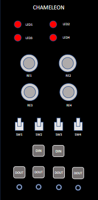
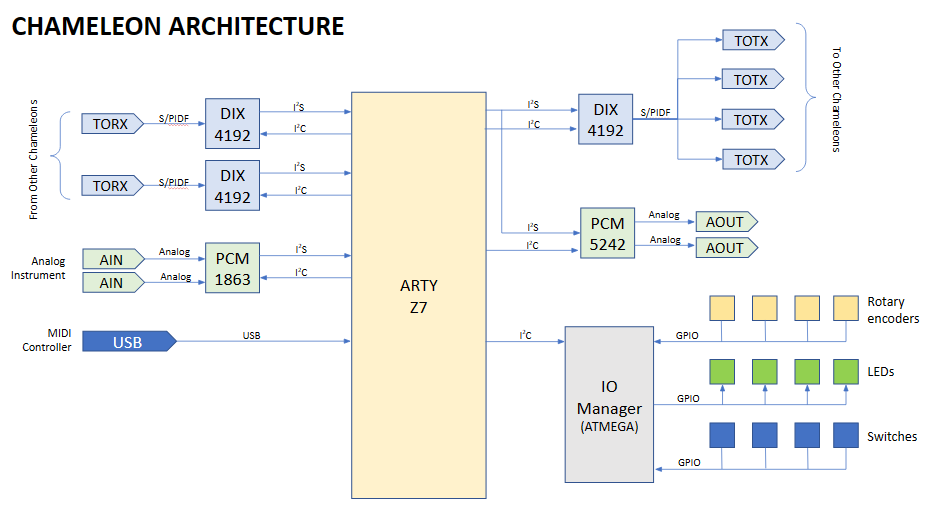

University of Washington ENGINE 2023
Chameleon: Electrical Musical Instrument Platform
Chameleon is an open-source, reprogrammable, digital modular synthesizer platform built around the YASE synthesis engine. The goal was to create a Eurorack-friendly module that could teach digital signal processing through music production while communicating with analog modular gear and other Chameleon units.


Project Scope
- Designed toward a digital modular synth that can act as a waveform generator, filter, effect, sequencer, or other programmable module.
- Used a Xilinx Zynq 7020 on the Arty-Z7 platform for ARM plus FPGA audio processing.
- Integrated digital audio I/O concepts around S/PDIF, I2S, and DIX4192-style routing.
- Used PCM1863 ADC and PCM5242 DAC components for line-level analog audio input and output.
- Built a front-panel UI concept around four LEDs, four rotary encoders, four toggle switches, and an ATSAMD21 microcontroller over I2C.
Results
- Designed, ordered, and assembled 7+ printed circuit boards.
- Produced working transceiver, I/O, and ADC boards.
- Verified successful I2C communication between the host board and peripheral PCBs.
- Ran YASE outputting sound from Le Potato as part of the prototype system.
- Built hands-on experience with KiCad, Linux, GitHub, SMD soldering, thru-hole soldering, and reflow assembly.